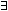

The Manchester Syntax is a user-friendly compact syntax for the ontology language OWL, especially for writing OWL class expressions. Although the syntax borrows ideas from the OWL Abstract Syntax, it is much less verbose, meaning that it is quicker to write and easier to read. While following the compactness of the DL Syntax, special mathematical symbols such as the universal quantifier () or the existential quantifier () have been replaced by keywords such as "only" and "some".
The Manchester Syntax for OWL2 is not strictly a part of the OWL2 recommendation by the W3C but it was developed by members of the W3C OWL2 working group and the syntax is published as a W3C Note. In this Note at http://www.w3.org/TR/2009/NOTE-owl2-manchester-syntax-20091027/ you can find the complete language specification and also examples for using it.
In the NeOn Toolkit the Manchester Syntax is applicable whenever class expressions are expected, i.e. when complex classes are allowed as part of certain slots of the GUI. To become familiar with the Manchester Syntax, the OWL Perpective also provides a special toolbar that helps with the Manchester Syntax keywords. To activate the Manchester Syntax Toolbar, proceed as follows:
The Manchester Syntax Toolbar will be available whenever you edit a class description.
This section presents some examples to illustrate how to use the Manchester Syntax.
Restrictions
The following table shows the Manchester Syntax for restrictions:
| OWL Construct | Manchester Syntax Keyword | Example |
|---|---|---|
| owl:someValuesFrom | some | hasRelative some Person |
| owl:allValuesFrom | only | hasAuthor only Writer |
| owl:hasValue | value | writtenBy value Goethe |
| owl:minCardinality | min | hasPlayer min 3 |
| owl:cardinality | exactly | hasPlayer exactly 3 |
| owl:maxCardinality | max | hasPlayer max 3 |
Boolean Class Constructors
The following table shows the Manchester Syntax for Boolean class constructors:
| OWL Construct | Manchester Syntax Keyword | Example |
|---|---|---|
| owl:intersectionOf | and | Writer and Male |
| owl:unionOf | or | Male or Female |
| owl:complementOf | not | not Child |
Complex Class Expressions
Complex class expressions can be constructed using the above boolean constructors and restrictions. For example, the following string describes the set of people who have at least one child that has some children that are only men, that is, grandparents that only have grandsons:
Person and hasChild some (Person and (hasChild only Man) and (hasChild some Person))